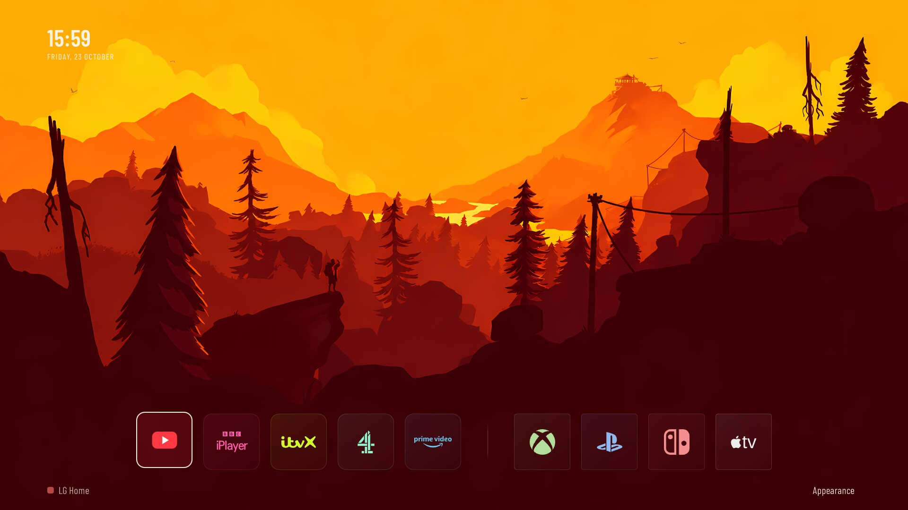

Valley
Sunlit ridges and deep forest.
AN UNOFFICIAL FAN PROJECT · LG webOS
Golden valleys. Snow-covered forests. A lookout above the trees.
Your favourite apps, with a view worth leaving on.

SIX VIEWS · SEVEN TIMES · 42 WALLPAPERS
Hover a slice to reveal its full landscape.
Click or tap to keep it. Tab and Enter work too.
Sunlit ridges and deep forest.
The same valley, under snow.
A watchtower above the pines.
Winter light over the lookout.
A little closer to the forest.
Snow-covered trees, up close.
A still-artwork gallery. The TV app adds birds, moving stars and subtle tree motion; this page is not a live TV performance demo.
EXPERIMENTAL COMMUNITY PREVIEW
The standalone native app includes all 42 wallpapers, Appearance controls, and an Apps & Inputs editor. Explore the desktop mock first, or help test the prebuilt ARM package on a rooted test TV.
Locally tested; not yet validated on a fresh TV. Automatic Home replacement, startup optimisation and screensaver integration are not included. No universal compatibility or boot-time claim.